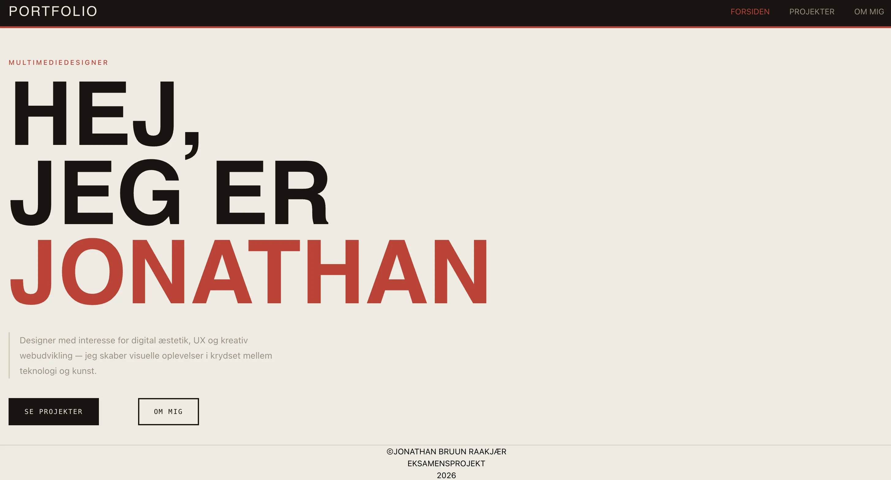

T06 - PORTOLIO - EKSAMEN
MMD FORÅR 2026Løsning
I portfolioeksamenen udvikler jeg en personlig hjemmeside, der samler alle mine projekter og erfaringer fra første semester. Portfolioen fungerer som en præsentation af mine kompetencer, projekter og faglige udvikling.
Se projektet her ↓
MIT PROJEKT
Proces
Jeg har arbejdet med at strukturere indholdet, udvælge relevante projekter og udvikle en visuel identitet, der afspejler min personlige stil. Portfolioen er designet med fokus på både brugeroplevelse og visuel kommunikation.
Reflektion
Portfolioeksamenen har givet mig mulighed for at samle og reflektere over alt det, jeg har lært gennem første semester. Ved at gennemgå mine tidligere projekter har jeg fået et tydeligt billede af min faglige udvikling og de kompetencer, jeg har opbygget undervejs. Jeg kan se, hvordan mine designprocesser er blevet mere strukturerede, og hvordan mine tekniske færdigheder inden for HTML, CSS og JavaScript er blevet stærkere gennem semesteret. Samtidig er jeg blevet mere bevidst om betydningen af UX, research og brugertest i udviklingen af digitale løsninger. Portfolioen fungerer derfor ikke kun som en præsentation af mine projekter, men også som en dokumentation af min læringsrejse og udvikling som multimediedesigner.